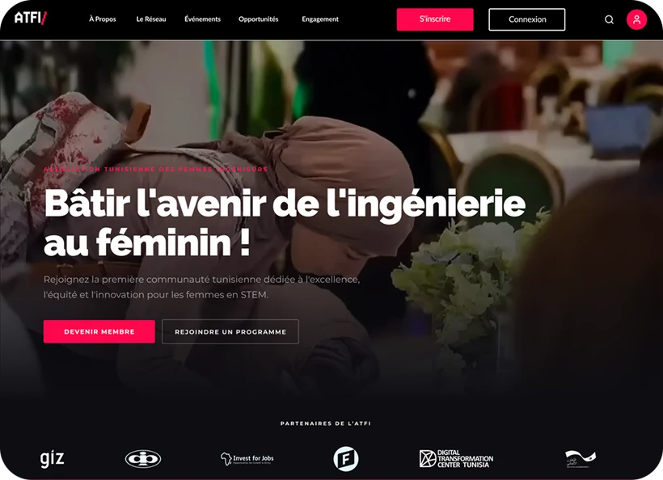
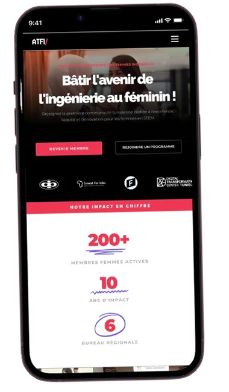
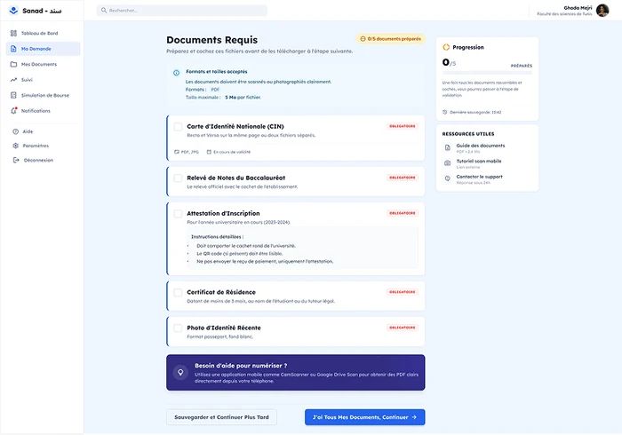
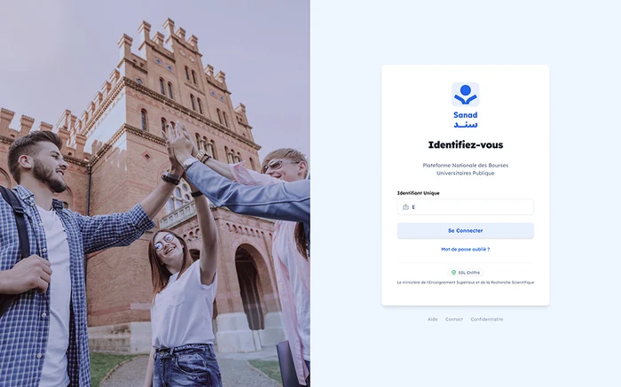
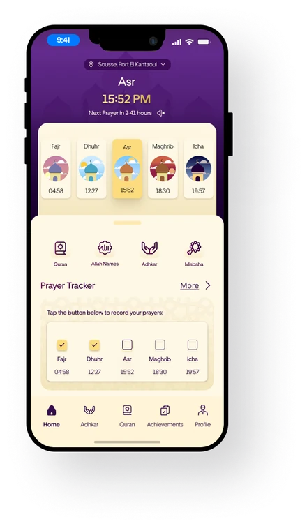
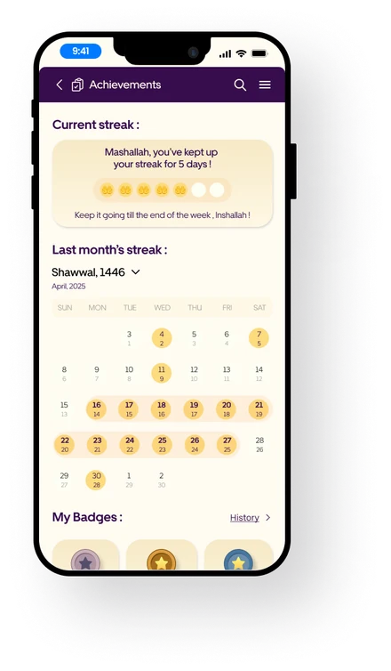

Turning a traditional network into a dynamic space for young women engineers in STEM.


A transparent, fully digital financial-aid service for Tunisian university students.


Redesigning a religious companion app into a calm, guided daily ritual.